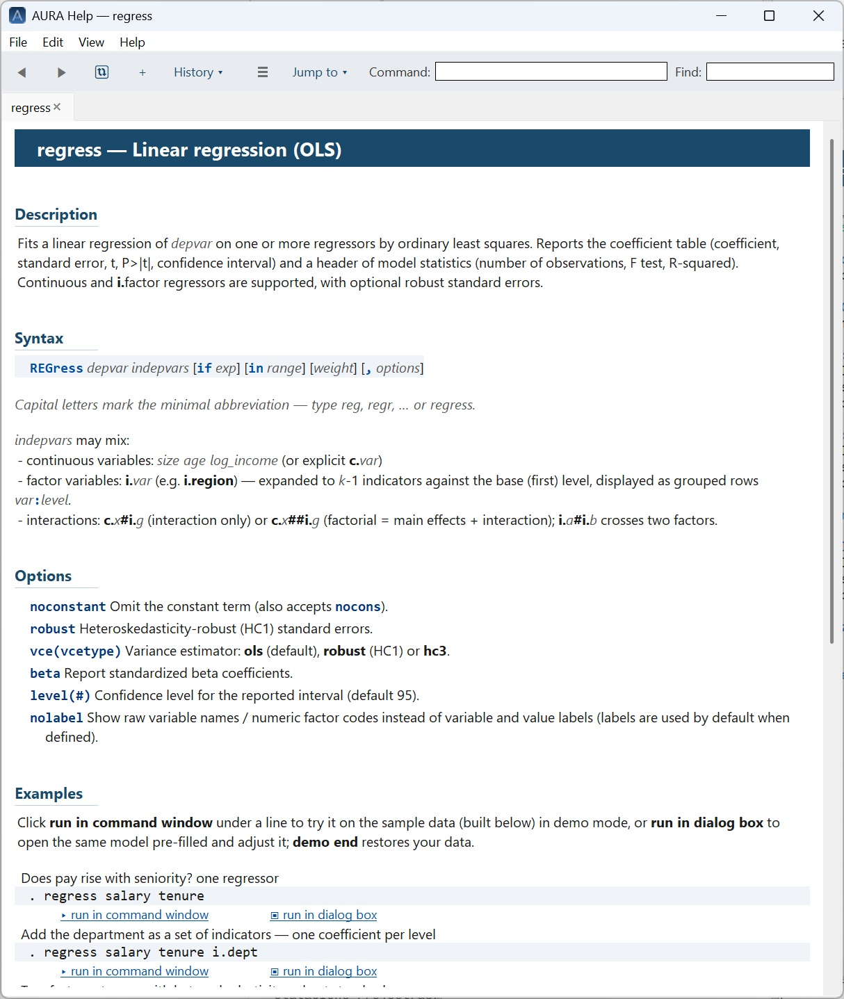

Learn
Guides, manuals and the reference of every command
Everything that comes with AURA, to read here before you install it. Inside AURA, help followed by a command opens its page, with examples you run with a click.
Command reference
Every command of AURA and of its packages, with what it does — searchable, and grouped by subject.
Browse the commands →Release notes
What each version added and corrected, from the first release to AURA 1.6.
Read the release notes →Inside AURA
Help with examples you run with a click
Type help and a command: its page opens with the syntax, the options, and examples that load their own data and run with a click — in the command window, or in the command's dialog box, filled in. Help → Getting Started walks through a first session.

Guides
The User and Developer guides
The same guides open in AURA from the Help menu.
User Guide
The interface, the command language, data management, statistics and estimation, survey data, graphics and the Graph Editor, scripts, packages — with examples.
Read the User Guide →Developer Guide
Write your own commands as Python modules: reading options, posting results, tables, help pages, dialog boxes, packages, and the AI-assisted workflow.
Read the Developer Guide →Manuals
The manuals of the packages
The methods, their formulas and their commands, with worked examples. In AURA, daapmanual and subsimmanual open them.
DAAP manual
Poverty, inequality, polarization, dominance, pro-poor growth and decompositions: the indices, their estimators and their standard errors.
Read the DAAP manual →SUBSIM manual
Price schedules, the direct and indirect effects of a reform, the measures of well-being, the dialog boxes and worked examples.
Read the SUBSIM manual →